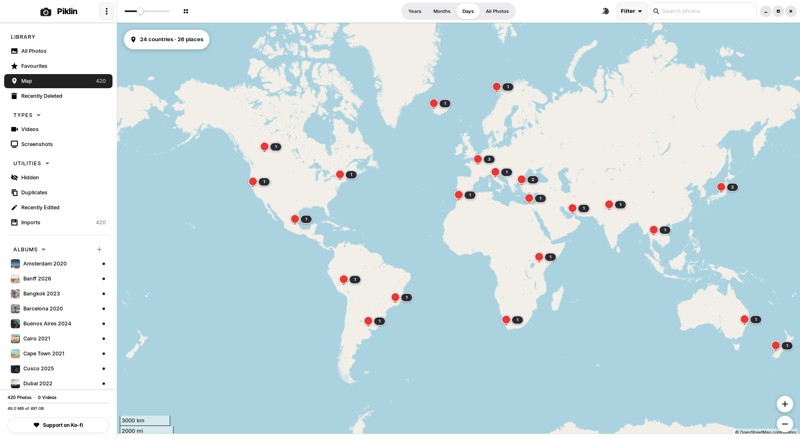
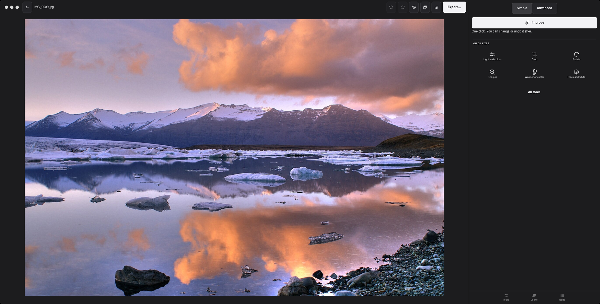
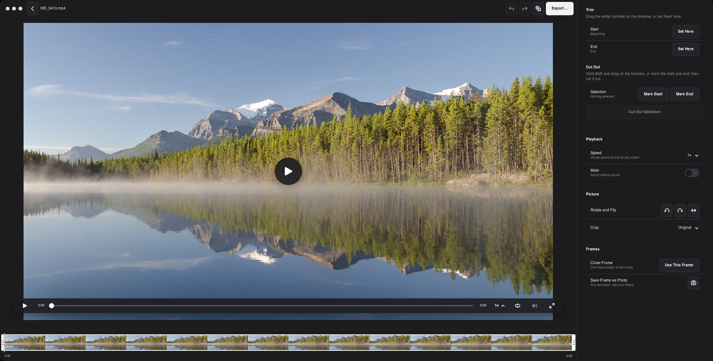

Everyone you love, found on your own computer.Todos los que quieres, encontrados en tu propia computadora.
Piklin recognises faces without a server, an account or a upload. Name a person once and every photo of them gathers by itself.Piklin reconoce caras sin servidor, sin cuenta y sin subir nada. Nombra a una persona una vez y todas sus fotos se juntan solas.
- It learns from you. “Is this the same person?” asks only when unsure, and your answers teach it.Aprende de ti. “¿Es la misma persona?” pregunta solo cuando duda, y tus respuestas le enseñan.
- Sideways or upside down? Found. Faces lying down are looked for on their own.¿De lado o de cabeza? Encontradas. Las caras acostadas se buscan solas.
- Frame the picture. A round frame to move, resize and turn, so the portrait is the face you want.Encuadra la imagen. Un marco redondo para mover, cambiar de tamaño y girar, y que el retrato sea la cara que quieres.
- One list on every computer, shared through your backup. Photos only, never videos.Una sola lista en todas tus computadoras, compartida por tu copia. Solo fotos, nunca videos.
Type what you remember.
In any order.Escribe lo que recuerdas.
En cualquier orden.
A person, a date, a place, an album, a folder. Piklin reads it the way you would say it, and shows what it understood.Una persona, una fecha, un lugar, un álbum, una carpeta. Piklin lo lee como lo dirías tú y te muestra lo que entendió.
- Dates as you write them: 15/07/2019, July 15, before 2012, between 2015 and 2017.Fechas como las escribes: 15/07/2019, 4 julio, antes de 2012, entre 2015 y 2017.
- Folders and albums: type “disney trip” and see the folder with every album inside it.Carpetas y álbumes: escribe “viaje disney” y ve la carpeta con cada álbum que tiene dentro.
- Leave things out with a minus:
-videos,-Ana.Deja cosas fuera con un menos:-videos,-Ana.
Keep them where they are.Déjalas donde están.
All your photos on an external drive? Point Piklin at it. It never copies or moves a thing, and your library stays usable with the drive unplugged.¿Todas tus fotos en un disco externo? Apunta Piklin hacia él. Nunca copia ni mueve nada, y tu biblioteca sigue funcionando con el disco desconectado.
- Browse, search and use the map with the drive out. Previews, albums, edits and people live on the computer.Navega, busca y usa el mapa con el disco fuera. Las vistas previas, álbumes, cambios y personas viven en la computadora.
- It tells you which drive is missing, and looks for new photos by itself when it comes back.Te dice qué disco falta, y busca fotos nuevas solo cuando vuelve.
The map is the way into your library.El mapa es la puerta a tu biblioteca.
Every place you have been, as pins. Rest on a pin and its albums slide in. Places are named on your own disk: a coordinate never leaves your computer.Cada lugar donde has estado, como pines. Detente en un pin y sus álbumes aparecen. Los lugares se nombran en tu propio disco: una coordenada nunca sale de tu computadora.

A whole photo studio.
No account. No cloud.Un estudio de fotos completo.
Sin cuenta. Sin nube.
Made for big librariesHecho para bibliotecas grandes
Tested with 150,000 photos on a normal computer. Browsing stays instant and memory stays low.Probado con 150,000 fotos en una computadora normal. Navegar sigue siendo instantáneo y la memoria se mantiene baja.
RAW photos and videoFotos RAW y video
22 RAW formats, plus a full video player and editor.22 formatos RAW, además de un reproductor y editor de video completos.
Edit simply, or fullyEdita fácil, o a fondo
One-click Improve and six plain-word fixes, or every tool. Copy and paste adjustments between photos. Originals are never touched.Mejorar con un clic y seis arreglos con palabras normales, o cada herramienta. Copia y pega ajustes entre fotos. Los originales nunca se tocan.
Backups that matchCopias idénticas
To a drive, a NAS or a cloud you own, from many computers at once. A restore returns your library exactly as it was.A un disco, un NAS o una nube tuya, desde varias computadoras a la vez. Al restaurar, tu biblioteca vuelve exactamente como estaba.
Smaller, safelyMás pequeñas, sin riesgo
Free disk space with compression that checks the result looks the same as the original.Libera espacio con una compresión que comprueba que el resultado se ve igual que el original.
Light and darkClaro y oscuro
Follows your computer. The photographs stay the brightest thing on the screen.Sigue a tu computadora. Las fotografías siguen siendo lo más brillante de la pantalla.


Take your photos back.Recupera tus fotos.
Pick your computer and download one file. We highlight the one that fits yours.Elige tu computadora y descarga un archivo. Resaltamos el que le va a la tuya.
Installing on a MacInstalar en un Mac
- Open the .dmg and drag Piklin into Applications.Abre el .dmg y arrastra Piklin a Aplicaciones.
- Open Piklin. macOS says it cannot check it for malware: that is expected, Piklin is free and not sold through Apple. Click Done, not Move to Trash.Abre Piklin. macOS dice que no puede comprobar si tiene malware: es lo esperado, Piklin es gratis y no se vende por Apple. Pulsa Listo, no Mover a la Papelera.
- Go to System Settings › Privacy & Security, scroll to Security and click Open Anyway beside Piklin. Enter your password and click Open.Ve a Ajustes del Sistema › Privacidad y seguridad, baja hasta Seguridad y pulsa Abrir igualmente junto a Piklin. Escribe tu contraseña y pulsa Abrir.
- When macOS asks whether Piklin may use your Pictures or Downloads folder, click Allow.Cuando macOS pregunte si Piklin puede usar tu carpeta Imágenes o Descargas, pulsa Permitir.
It asks only once. Needs macOS 11 Big Sur or newer. Every download is signed, and Piklin checks that signature before it updates itself.Lo pide solo una vez. Necesita macOS 11 Big Sur o más nuevo. Cada descarga está firmada, y Piklin comprueba esa firma antes de actualizarse.